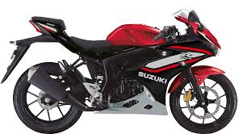

SUZUKI
CATÁLOGO DE MOTOCICLETAS
Sobre Suzuki
Suzuki Motor Corporation es una empresa japonesa fundada en 1909, reconocida mundialmente por la fabricación de motocicletas de alta calidad, rendimiento excepcional y tecnología innovadora.
Modelos Disponibles

Gixxer GSX 250 SF
Motor: 249cc, 4 tiempos
Potencia: 26.5 HP
Transmisión: 6 velocidades
Peso: 158 kg
Precio: $2,499

GSX-R150
Motor: 147cc, 4 tiempos
Potencia: 19.2 HP
Transmisión: 6 velocidades
Peso: 134 kg
Precio: $1,899